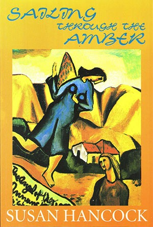

Sailing Through the Amber
Susan Hancock

Description
That’s my favourite time, sailing across the gap between the red and the green; it takes good timing to find that gap, that place of pause between two regimens, and when you hit it right, you know... sailing through the amber, I call it, because as you take off, through all the warning signs, the moment you cross the grid you go into freedom. The Greeks call it chiasma, the place of absence at the centre of a crossroad, the gap that none of the four roads enters; a dark space in the middle of the night. Loss and change and the sudden exhilaration the gaps in our lives give are at the heart of Susan Hancock’s fiction. The cities she creates are thronged with people telling their own stories. At times, strangely silent and deserted, they become the sites of an oddly visionary grace. Her prose, seemingly casual and airy, is structured and considered. A keen balance of dialogue and description develops into metaphor and image. It embraces heartbreak and angels. I find its wit, sophistication, colour and technical command impressive. Helen Garner Hancock ’ s writing sailed into my world like some startling and haunting song... Her stories have that breathless emotional depth that you find only in very fine writing. They are stories of the lives of educated, urban upper-class men and women. She charts the disturbances of their relationships, the ecstacy and the pain of love. She ’ s uncanny in her observation and has a richly slanted vision framed by a glittering intelligence. Her best theme is reflecting exactly how the way we live affects the children of these fraught relationships. Helen Elliott, The Sydney Morning Herald Hancock ’ s stories are compellingly human: she takes us close to the warmth and drama of family life, close to the lovers and children around whom her stories swim. Although dense with emotive concerns, her prose remains open and considered throughout... Finely tuned empathy for a history and a landscape. Joe Hill, Overland Hancock is brilliant with the particular, building up characters and situations by tenderly and suggestively laying down detail after detail, but she keeps a steady eye on the general case as well... The title story, ‘ Sailing Through the Amber ’ is a little masterpiece... Hancock writes like an angel. Treat yourself. Anne French, The Listener (New Zealand) Cover painting Angel of the Annunciation by Colin McCahon
Description
That’s my favourite time, sailing across the gap between the red and the green; it takes good timing to find that gap, that place of pause between two regimens, and when you hit it right, you know... sailing through the amber, I call it, because as you take off, through all the warning signs, the moment you cross the grid you go into freedom. The Greeks call it chiasma, the place of absence at the centre of a crossroad, the gap that none of the four roads enters; a dark space in the middle of the night. Loss and change and the sudden exhilaration the gaps in our lives give are at the heart of Susan Hancock’s fiction. The cities she creates are thronged with people telling their own stories. At times, strangely silent and deserted, they become the sites of an oddly visionary grace. Her prose, seemingly casual and airy, is structured and considered. A keen balance of dialogue and description develops into metaphor and image. It embraces heartbreak and angels. I find its wit, sophistication, colour and technical command impressive. Helen Garner Hancock ’ s writing sailed into my world like some startling and haunting song... Her stories have that breathless emotional depth that you find only in very fine writing. They are stories of the lives of educated, urban upper-class men and women. She charts the disturbances of their relationships, the ecstacy and the pain of love. She ’ s uncanny in her observation and has a richly slanted vision framed by a glittering intelligence. Her best theme is reflecting exactly how the way we live affects the children of these fraught relationships. Helen Elliott, The Sydney Morning Herald Hancock ’ s stories are compellingly human: she takes us close to the warmth and drama of family life, close to the lovers and children around whom her stories swim. Although dense with emotive concerns, her prose remains open and considered throughout... Finely tuned empathy for a history and a landscape. Joe Hill, Overland Hancock is brilliant with the particular, building up characters and situations by tenderly and suggestively laying down detail after detail, but she keeps a steady eye on the general case as well... The title story, ‘ Sailing Through the Amber ’ is a little masterpiece... Hancock writes like an angel. Treat yourself. Anne French, The Listener (New Zealand) Cover painting Angel of the Annunciation by Colin McCahon
{kind=link}
Information
| ISBN | 1876044020 |
| Release | 1995 |
| Pages | 145 |
About the Author
Reviews
Sunday Star Review
Reviews Perils of life in the danger zone Joy Mackenzie Sunday Star (New Zealand) It takes good timing to find the gap, between the regiments of red and green. When you hit it right, you know. Susan Hancock’s short story ‘Windsong’ (published here in her first collection) won the Sunday Star Short Story Competition in 1994. The story is an impressionistic one about a boy’s disturbance at his parents’ separation. The bereft but enduring deserted wife is a recurring theme in Hancock’s stories. A spectrum of emotions are depicted without overstating the anger or frustration of those left behind. In ‘The Porcelain Face’, she adeptly portrays the bewilderment of a child. ‘I hate the whole weld ,’ the child says. ‘And I hate all the planets.’ The same characters inhabit many of these stories: the abandoned wife Anna, her child James, her sister, her brother, a best friend. Anna is mostly a protective mother. In one sense she reassures her son by recounting the time he heard a ‘dangerous noise’ in his room which she thought was a blowfly behind his skirting board. ‘Until I saw the little puffs of smoke’, she says. ‘And it made me think maybe there was a little tiny dragon down behind your skirting board, but it was really an electric wire So you were quite right all the time, it was a dangerous noise.’ On another occasion Anna is not so comforting. Noticing her child ‘shivering and pallid’ in the shallow end of a swimming pool, she is suddenly distressed at their predicament. ‘Oh get out of the water you ghastly little wimp,’ she says. ‘God, why couldn’t I have had one ordinary, cheerful child instead of you? It’s not my fault your father’s left… and there’s nothing I can do to make it better, so just remember that.’ Often a character gains a flash of enlightenment. In. the title story, an idle comment from the female narrator about moving in with her lover and his wife elicits his response: ‘You are a fighter, aren’t you? You’d do anything for me.’ His presumptuous remark illuminates the situation and the woman realises she has fallen out of love. She likens her situation to that of driving through the amber light at a crossroads: ‘That’s my favourite time, sailing across the gap between red and green; it takes good timing to find the gap, the place of pause in between the two regiments of red and green, and when you hit it right, you know.’ This is stringent writing, with darkness and lightness of mood conveyed by realistic dialogue and detailed descriptions of landscape (New Zealand or Australia, where Hancock now lives). Art is an important component, and it is fitting that Hancock has chosen Colin McCahon’s painting The Angel of the Annunciation for the cover of her first book. Hancock’s characters are credible and her writing is vivid and technically assured. I look forward to reading more.
Imago Review
Sailing Through the Amber Helen Horton Imago , Vol. 9, No. 2, winter 1997 Sailing Through the Amber is a collection of stories where the main characters are trying to find their own identities. ‘I went around being all the different people that I was’ (pg. 44) is the crux of their dilemma - they come across as divided souls, drifting through the segments of their lives, some of which are crisis points. Anna, who figures in several of the stories, is trying to cope with being left by her partner/husband with a small child. Equally tenacious is the drawstring relationship between woman and child - it surfaces in dreams as well as the action. The stories give a strange feeling of the protagonist standing aside and watching/analysing at the same time as taking part in the action, more often than not when this includes the resolution of a love situation. The philosophy is contained in the last sentence of ‘Behind the Glass’; ‘if you live where you don’t belong,’ you are either ‘imprisoned, or on the outside - behind the glass.’ Even the secondary characters are tainted with this sense of not quite reality living, such as the brother who at the end of the title story ‘goes off to his room, that place of mystery, of listening.’ (pg. 66). While most of the stories are of women in this state, ‘Windsong’ is of a child, a boy, who drifts in the limbo of a broken home. The final story is an attempt to come to terms with this identity problem associated with restlessness of spirit that pervades all the stories. Here the wanderer, having re-entered for a while the place of her roots, is assured by a sister that there will always be somewhere for her to come home to. There is a cohesive tone to the whole collection; the stories not only have inter-related characters, they are written in the same style, with a mix of perception of detail and imagery that create the atmosphere and scenes well, while interspersed with tight and relevant dialogue.
Overland Review
Intensified Moments Joe Hill Overland , No. 146 - 1997 While Hampton’s streets are punctuated by silences of strangeness in Letters to Francesca [Richards], the spaces of Susan Hancock’s stories in Sailing through the Amber are filled with the sombre quiet of waiting and knowing. She describes air and light as if they were water and her silences flow like liquids into lives weighed down by failing relationships, displaced childhoods and mid-life crises. Sadness, loss and emotional rebirth are recurring themes. Hancock’s stories are compellingly human: she takes us close to the warmth and drama of family life, close to the lovers and children around whom her stories swim. Although dense with emotive concerns, her prose remains open and considered throughout. In ‘Rubaiyat’, sisters Louise and Lyddie share the task of sorting and discarding their dead father’s belongings. We connect with them, not because they tell us about the intensity of their feelings, but because we can observe it, in the understated details of their actions and the corners of their everyday worlds. In this way Hancock’s narratives focus on the internal workings of characters’ lives without needing to overstate or explain the mechanics. There is easy movement into abstractions; from concrete details of households and holidays into shimmering translucent metaphor. The simple acts of cleaning a window or repairing a vase frame the traumas and joys of rebuilding and rediscovering complicated lives. Travelling is also important, as both a metaphor for framing emotional change and a narrative device for intensifying and concentrating action. In ‘Behind the Glass’, a car trip through wet New Zealand hills plays out the drama of a broken marriage and the difficult consequence for a mother and her son. Travelling, or simply arriving, or leaving, is also a way of touching family roots and cultural heritage. Hancock is a New Zealander by birth, and it is when she returns to New Zealand in her stories that she is most engaging. Here we read through her finely tuned empathy for a history and a landscape, and it is here too that the gentle rhythm and keen visual and emotive sensitivities of Sailing through the Amber are at their most potent.
Listener Review
Go into freedom - Sailing Through the Amber Anne French Listener [New Zealand], 29 March 1997 Here is the loving attention to detail that most women lavish only on their closest friends. Susan Hancock: intimate, tender, revealing, true. You can keep your Emilies and Kirsties and Rosies. For my money, Susan Hancock is our most exciting cultural export for years. Susan who? Let me explain. She is a New Zealander who has spent a while (years? a decade? more?) living in Australia. Until a couple of years ago, she taught at La Trobe University in Melbourne. And she can write. Several of the stories in this collection have won prizes; and most of us haven’t heard of her. She is so good that pretty soon the Aussies will start pretending she is theirs. But she is definitely one of us. There are little signs all over the stories. ‘It is a strange country for insects, Lewis and I agree. Piles of ants like old tea-leaves lie heaped in comers...’ ‘I wonder if they’re living somewhere like Rotorua where all the cloud shadows have a yellow underside as they fall down the long heights of the light, and the air over the baking pine forests that stretch for miles is electric and dead.’ ‘I think we needed to come to Australia just so we could step far enough back to get our own place in focus, the way people who are long-sighted have to do.’ Hancock has a blood-hound’s nose for the traces of emotional complexity. She writes about women and their relationships (with their children, their lovers, their ex-husbands, their friends) with the loving attention to detail and to meaning that most women lavish only on their closest friends. The whole collection, once you’ve read and reread it a few times, is like a weekend of conversations with people you’ve known for 20 years: intimate, tender, revealing, funny, true. Hancock is brilliant with the particular, building up characters and situations by tenderly and suggestively laying down detail after detail, but she keeps a steady eye on the general case as well. (‘It is a strange world of women that I belong to now. Some of us have children; not many of us have men. We all have delicate names - Alison, Laura, Rose - fragile, elusive names our mothers gave us for the men we never met.’) She has a great ear for dialogue and damning admissions. (‘He looked at her with a kind of cold patience. ‘Children don’t need to live with both parents,’ he said. ‘Look at me - I haven’t even seen my father since I was four.’ She looked.’) She’s succinct. Her prose is vivid, pungent and subtle. The title story, ‘Sailing Through the Amber’ is a little masterpiece. It begins with a woman, and an argument, and a dream. It seems to be about the woman having dinner with her married lover, and falling out of love with him between one sentence and the next. ‘He bends his face very low to the plate when he eats, so that his eyes seem to ride up in his forehead and his gaze becomes suspicious, like a wombat I once frightened...’ Not until the last few paragraphs does the real subject reveal itself: it’s not the emptiness of the present love affair that’s significant, but the narrator’s realisation at the beginning of the story that ‘all the time I’m pretending that I’m happy again and that I’m not missing the other man, the man that I’ve lost’. The metaphor for that loss is timing the traffic lights, sailing across between green and red. ‘...Sailing through the amber, I call it, because as you take off, through all the warning signs, the moment you cross the grid you go into freedom. The Greeks called it chiasma, the place of absence at the centre of a crossroads, the gap that none of the four roads enters; a dark space in the middle of the night.’ Susan Hancock’s publishers can’t proofread for toffee. The binding is cheap, and the McCahon on the front has been crudely cropped and given a nasty orange cast. But Hancock writes like an angel. Treat yourself.
New Zealand Books Review
Fiction - Sailing Through the Amber Janet Hughes New Zealand Books , Issue 26, Vol. 6, No. 5,1996 The title of Susan Hancock’s volume of short stories, Sailing Through the Amber , strucks me as a welcome change from cryptic single words and the opening story bore out its promise of lyricism amply. ‘Mollie’s Windows’ is lyrical, lucid and disconcerting. It traces the emotional curve of a day in a woman’s life, using light on, in and through windows, as a correlative. There is a complex symbolic traffic between the intensely vivid imagery and the woman’s psyche. The light figures as cause and effect, projection and influence, image and medium; her state of mind is reflected and affected, colours and is coloured. The storyline is exiguous. We learn a little about Mollie’s circumstances, watch her wash her windows in a sunny mood, learn a little about an old acquaintance she meets at the pub. There is just enough said and seen to discompose Mollie’s humour and worry us. We know enough to fear knowing more, and our understanding is reinforced by the negative transformation the imagery takes as she walks home, and tries to shut out the light of the moon. That is all. It is an exquisitely crafted story, calling often on resources more common in poetry than prose, with a formal elegance at the opposite end of the spectrum from [Raewyn] Alexander’s also poetic language [in Fat ]. The imagery renders elusive permutations of mood concrete and intelligible. The minimal action is thought-provoking and open-ended but not baffling or cryptic. Most of the stories deploy similar resources in differing proportions: striking visual imagery; fractured relationships; lyricism; fragmentary dialogue; loose or open ends. Many of them can stand proudly in the line traceable back to Mansfield, though few combine the elements quite so lucently and elegantly as ‘Mollie’s Windows’. And some left me feeling frustrated or baffled. One such was the title story and the title itself bears upon my irritation. I misunderstood it. Out of context, I took it to refer to mood, a cruisy sense of moving easily through a benign, enchanted atmosphere like the golden light in the McCahon on the cover. An so often Hancock’s imagery colours the very air with projected mood - in ‘Mollie’s Windows’ it is sky-blue with heat, good humour and birdsong. But I had it wrong, I discovered when I read the story. It was about traffic lights: ...sailing across the gap between the red and the green... sailing through the amber, I call it, because as you take off, through all the warning signs, the moment you cross the grid you go into freedom. The Greeks call it chiasma, the place of absence at the centre of a crossroad... a dark space in the middle of the night. And I continued to understand imperfectly, not just because our traffic lights don’t show amber before green as Australian ones do [in fact Australian lights show amber before red, not before green]. My problem was with the obscure, teasing connection between the metaphor and the fragmentary action. Sometimes Hancock’s rich imagery fills the air and colours the light till they are no longer transparent and all that is illuminated is the character’s or narrator’s mood. Reading these stories felt a bit like navigating something thick and syrupy, warmly glowing but ultimately a hindrance to progress. Amber, perhaps? Some of these stories I think suffer from an excess of refinement or sophistication; they ask a lot, perhaps a little too much, of the reader. At times they made me think longingly of the way Poppy in [Raewyn Alexander’s] Fat projects her subjectivity on to everything but in a way that defines what it bounces off, like radar. The reader doesn’t have to feel trapped in her often frankly distorted perception, like an insect in amber. Hancock’s stories demand effort from the reader but at least they do not make one feel got at. They maintain a cool distance, where so many short stories resort to tricks to manipulate our sympathy or understanding, by way of compensation, I suppose, for lack of space in which to engage us less forcibly. The effort called for may be too much for some readers but in most instances it is richly rewarded. Even the most challenging stories are elegant examples of the storyteller’s art, exhibiting a graceful, distinctive style and an exceptionally sure touch.
Landfall Review
Reviews Sarah Quigley Landfall , No. 192, November 1996 The settings for Susan Hancock’s first collection of short stories, Sailing Through the Amber , are equally important, equally vivid [as in recent fiction set in urban New Zealand], but more varied. Hancock was educated at Canterbury University, then at Oxford, and has finally settled in Melbourne where, until recently, she lectured at La Trobe University; her stories, too, wander between Europe, Australia and New Zealand. ‘The Passion of the Poor’ and ‘A Story Set in Venice’; conjure up the luminous light and sea of Italy; ‘Rubaiyat’ unfolds from the steep Brooklyn hills of Wellington. The descriptions of New Zealand are the most evocative but despite this Hancock is less firmly grounded in this country than Shaw or Alexander. One of her characters feels the ‘exile’s pain’ but is not ready to be claimed by time or place, and there is a sense of autobiographical truth behind these words. The visual detail throughout the collection is strong, and the imagery arresting: in the evocative ‘Windsong’ the sky is ‘post-marked’ with blue stars, and the boy’s voice is a seagull, hanging its ‘two winged hooks of complaint’. Although some take rural settings, the majority of the stories reflect an urban influence; they also reveal Hancock’s academic background. Her characters are well-educated, articulate: through their dialogue and reactions she explores the themes of isolation, separation and the nature of love. Occasionally, the symbolism placed on everyday events seems excessive; you wish for something to be simply what it is, not what it is made to represent. In particular, the lengthy story ‘Goodbye’ - about the arrival of an enigmatic stranger at a house-party - labours under the weight of its mysticism. It is in the small details that Hancock excels: a twist of speech, a flash of colour; when she strays too far from these her writing loses some of its clarity and edge. Sailing Through the Amber is less easily categorised than Black Light [Laura Solomon], Fat [Raewyn Alexander] or Birdie [Tina Shaw]: it is less specific in its focus on a contemporary and urban New Zealand and less directly aimed at a particular generation of readers. But it has in common with them that certain down-to-earth quality which marks all four out as progressive fiction. Their worlds are the worlds of today and tomorrow rather than yesterday.
Australian Womens Book Review Review
Negotiating the Gaps - Sailing Through the Amber Ruth Starke (academic and writer) Australian Women’s Book Review , Vol. 8, No. 2, June 1996 (pgs 36-37) In the title story of Susan Hancock’s first published book - and it is one of the best - the central character describes the sort of driver she is: someone who takes risks at traffic lights, who sails across the opening between red and green and finds a brief freedom in that momentary gap where no roads intersect. The married man with whom she is having a half-hearted affair is a different sort of driver: cautious, calculating, unwilling (and no doubt unable) to take risks. He is, of course, Mr Wrong. Other stories in the collection are more impenetrable, especially when they wander into deeply metaphorical territory in exploring the nature of reality. They start on a firm foundation - a mother and son on a camping holiday pitch a makeshift tent in the darkness; tourists in Italy play cards in the kitchen of their rented villa - but like the hapless campers, the stories sometimes slide into murky territory where meaning is obscured. New Zealand looms large in many of the stories (the author is originally from that country), as does the natural world. Indeed, Hancock’s protagonists seem incapable of taking a step or drawing a breath without an intense consciousness of the interaction of light, wind, sun, stars, moon, sky and rain. This works to dramatic effect when used sparingly, as in ‘The Seal Wife’. The cumulative effect, however, is to give the stories a certain sameness and to foreground nature and the elements rather than letting them reflect and comment on the characters’ emotional lives. Recurring themes are death, separation, pain and inadequacy (often connected with motherhood), and most of the stories are written from a woman’s perspective. This doesn’t automatically classify a book as feminist - gender, for example, is very rarely an ingredient in the dilemmas and disappointments these women face - but a preoccupation with the female psyche is central to Hancock’s writing. It is their determination not to be victims which allows these educated, urban, middleclass women to rise above setbacks and separations. Humour, however, is rarely present: this is a deeply serious collection. A few laughs, a few smiles even, would have been welcome. Having said that, the best story in the collection, ‘Windsong’, is written from the viewpoint of a young boy about to commit suicide in the wake of his parents’ separation. Lyrical and deeply moving, it is written with economy, clarity and compassion. Perhaps it is significant that ‘Windsong’ was a prizewinner in a popular newspaper-short-story competition. Many other stories in the collection will only be fully appreciated by sophisticated and persistent readers willing to read slowly, to ponder, and to read again. And even then they may frequently find themselves still stuck in the gap instead of sailing through.
Who Weekly Review
Picks & Pans - Sailing Through the Amber Jamie Grant Who Weekly , 15 April 1996 A woman meets an old friend who is sitting in a pub, ‘a small child half-concealed on his knee’. She learns that he has recently been widowed, and the discovery brings her to confront her own self-obsession, understanding for the first time ‘her husband’s bitterness one night before he left, the night before she brought home the lamp she’d found. ‘Just like you.’ he’d said, ‘standing in a corner, illuminating nothing much except himself.’’ In the title story, a man’s careless remark to the woman with whom he is having an extramarital affair (‘You’d do anything for me,’ he says) transforms the way she sees him: ‘And that did it. One minute I was inside the situation, the next I was on the outside, looking in.’ The feeling she has, she decides, is like that one you have while driving a car through an amber light, ‘that place of pause between the two regimens of red and green’. Like many women writers. Hancock is a late starter, delayed by marriages, children and an academic career before publishing this first collection while in her forties, but hers has been a talent worth waiting for. Her prose style is rich and evocative, but most importantly, she understands that stories should have a point to them, rather than being mere transcribed excerpts from everyday life. In each of the pieces in this collection, distinctly recognisable characters undergo experiences like those summarised above, in which their lives, and their way of seeing themselves, are transformed by a particular, light-drenched instant.
The Age Review
Embracing the worlds of women’s writing Philippa Hawker The Age , 9 March 1996 Sailing Through the Amber is a collection of a dozen stories by Susan Hancock. In the title story, the narrator is being driven home by her married lover. As he approaches an intersection, she reflects on the difference between them, saying, ‘This is my favorite, time, sailing across the gap between red and green ... Sailing through the amber, I call it, because as you take off, through all the warning signs, the moment you cross the grid you go into freedom. The Greeks call it chiasma, the place of absence at the centre of a crossroad, the gap that none of the four roads enters; a dark space in the middle of the night.’ Many of Hancock’s stories seem to be about that moment of transition, of a passage through emptiness and beyond. She writes of encounters, revelations and longings in evocative, yearning prose.
Australian Book Review Review
Dark Spaces and Chilly Tales - Sailing Through the Amber Fia Clendinnen Australian Book Review , No. 178, February/March 1996 Sailing Through the Amber is Susan Hancock’s first published book, a collection of short stories. These stories are all set in an emotional territory Hancock calls ‘the gap’, ‘the dark space in the middle of the night’. It’s an uneasy and comfortless place where nothing is quite what it seems. The stories are mainly about separation, from the woman’s perspective. A marriage is breaking up; a child is involved. There is no great sound and fury on either part; the man is leaving with a sort of weary distaste which is more deeply wounding and annihilating than straight-out anger. The child can’t understand any of this and just wants everything to stay as it was. The mother is painfully aware that the care she offers the child is fragile. This pessimistic feeling of inadequacy runs deeply through the book. In one story a mother goes back to New Zealand with her son for a holiday. They drive around, camp in a bog and, for camping equipment, make do with a tarpaulin, some wobbly sticks and an old shower curtain. In the night, in his sleep, the child slides out of this makeshift tent and ends up in the mud uncovered. When he wakes up he has a fever. The feeling of hopelessness is described so powerfully it makes you ache. And yet running through this masochism is a kind of joy, an unhealthy joy maybe, but fierce nonetheless. Sitting in her failure, the protagonist intensely appreciates life and nature, a feeling that verges on being mystical. Hancock makes the natural world become part of her character’s emotional life, as happens to all of us in our dreams. The landscape is described intensely and romantically, wind and trees and light seem to rush right into the pores of her skin. The boundaries of self blur, which again is a kind of mysticism or madness. In ‘Windsong’, a prize-winning story, a boy whose parents are separated kills himself. He commits this act quietly, methodically. He wants to become one with nature, one instead of ripped in half as he is by his parents’ separation. The last thing he sees before unconsciousness rushes over him is a drawing he did when he was eight years old. It is a bright, happy picture of two adults and a child on a yacht on a sunny sea. This story is written with a lyrical, understated intensity of emotion that is almost unbearable to read. Hancock is currently writing a novel about matriarchy set in New Zealand (she is originally from that country). If her novel is as good as the best of these stories, I will want to read it. There’s a quality of surrender in Hancock’s writing that is rich and beautiful. And as well as all the sadness there is humour and compassion.
The Sydney Morning Herald Review
Summer Stories Helen Elliott The Sydney Morning Herald , 6 January 1996 Melbourne’s Susan Hancock is known and admired by a select audience because her stories have that breathless emotional depth that you find only in very fine writing. They are stories of the lives of educated, urban middle-class men and women, so they have certain boundaries because of Hancock’s assumptions about her audience. She charts the disturbances of their relationships, the ecstasy and the pain of love. She’s uncanny in her observation and has a richly slanted vision framed by a glittering intelligence. Her best theme is reflecting exactly how the way we live affects the children of these fraught relationships. ‘Windsong’, a very short tale about a young boy whose parents are separating, could be read as emotional and moral instruction. ‘The Passions of the Poor’ is a confronting, textured story about a lonely woman who, rushing away from herself, is suddenly made to face herself in all her greed, her ignominy and her selfishness. For me, after a year of exceedingly average writing from the Australian scene, Hancock’s writing sailed into my world like some startling and haunting song. It’s writing to sing about. The gorgeous cover is thrown in as a bonus.
The Australian Review
Stories stall on theories Tegan Bennett (author) The Australian , 29/12/1995 The demand for a good, strong metaphorical skeleton must be uppermost in a writer’s mind as he or she attempts a short story, possibly the most challenging kind of writing there is. The contrivances of language that can be more easily hidden in the novel (embedded, as it were, in the flesh of the plot) or stripped bare in the poem must be covered perfectly in the short story - visible, but not too sharp, not too obvious. Susan Hancock’s Sailing Through the Amber has as its title a beautiful metaphor, just mysterious enough to catch the eye, but making gorgeous sense when explicated. She describes the moment of driving through Melbourne traffic lights as they change from red to green, the sudden in-between-ness, freedom - chiasma she calls it. It’s a wonderful image, giving a sense of balance, of an instinct utterly right, and it would be wonderful if this book lived up to its promise. However, in the title story, as in its companions, this promise is never fulfilled. Sailing Through the Amber is a series of short stories dealing almost exclusively with love and loss. These are eternal, universal subjects that can always, in the right hands, bear another reworking. Hancock’s view of them is expressed poignantly and occasionally with real magic, but rarely does she find that exact, exalted moment of art. While she is a stylist of genuine talent, her skill is hampered by her tone and attitude to her subject matter. The knell of defeat sounds in almost every story. This, from ‘The Porcelain Face’: ‘You’ve lied to me, all along,’ she said, stepping close to him. ‘All along you’ve said you weren’t leaving me because of her.’ ‘I’m not,’ he said. ‘I’m leaving you because of you.’ While no one in their right mind expects or wants all female protagonists to be feminist heroines, this kind of passivity, this dumb, sad, staring-out-at-the-sea response to infidelity and cruelty eventually becomes frustrating. Perhaps Hancock’s work would be more satisfying to read if it were more intellectually driven - while she can describe things quite superbly, she never really explores them. The reader emerges from Sailing Through the Amber thirsting for a wild generalisation, a theory even, of human relationships, but these never materialise. Hancock’s writing is at its best when she is portraying children in ‘The Seal Wife’ and ‘Behind the Glass’. In these you get a glimpse of what she could and may yet still be - a thoroughly astute but forgiving observer of domestic life in all its forms. The domestic as subject matter does not necessarily make for dissatisfying reading. Drusilla Modjeska, Helen Garner, Tim Winton can all take you on an exhaustive tour of their kitchens and bedrooms, and still exhilarate you. There’s a delicate touch needed with this kind of work, somewhere between detailing the furniture and the cute things the kids say, and investing these ordinary things with more meaning than they warrant.